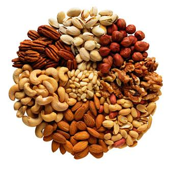

각종 영양분이 풍부한 식품으로 씹는 맛이 좋고 술안주로도 적당하며 건강에도 좋다. 그러나 탄수화물(대표적으로 밤)과 지방(대표적으로 호두와 피칸)이 많다. 불포화 지방산이 풍부하므로 포화 지방산보다야 사정이 낫지만, 지방이 1그램당 9kcal의 열량이라는 사실은 피해갈 수 없다. 따라서 다이어트를 하는 사람은 하루 섭취량을 제한할 필요가 있다. 다른 지방이 많이 든 식품과 마찬가지로 과식할 경우 소화가 덜 된 지방과 섬유소 때문에 설사의 위험이 존재하므로 적당히 먹자. 그리고 통풍이나 요로결석 환자의 경우에도 섭취에 주의해야 할 필요가 있다.

고지방류의 견과류는 몸에 좋고 다이어트에 좋은 음식이니 많이 먹어도 살이 안 찐다는 정보를 많이 볼 수 있는데, 당연한 얘기지만 많이 먹어서 살이 안 찌는 음식은 없다. 같은 칼로리를 먹어도 그 칼로리를 견과류로 대체하면 건강 및 다이어트에 좋은 영향을 미친다는 뜻이지 섭취 칼로리양 자체를 높여도 다이어트가 된다는 말은 아니다.
견과류에는 좁은 의미와 넓은 의미가 있는데, 좁은 의미로서의 견과류는 식물학적으로 자방벽이 목질화되어 단단한 과피를 지니고, 과피가 열개되지 않으며, 종자가 과피내벽에 부착되어 있거나 융합되어 있는 과실을 지칭한다. 대표적인 예로서는 도토리, 밤, 개암(헤이즐넛) 등이 있고, 이들은 후술할 견과류와 구별을 해야할 필요가 있을 때는 따로 진견과(True Nut)라고 지칭한다. 한가지 주의해야할 것은, 식물학적 분류라고는 했으나 견과류의 분류는 분류학상 분류가 아니라 형태학상 분류이다. 애초에 견과속 견과목 같은 건 없다는 것. 넓은 의미로서의 견과류는 다양한 종류의 단단한 열매를 뜻한다.